Responsive design at the Guardian
Why you should make your website future-friendly – right now.
Matt Andrews – @mattpointblank
10th October 2013 • CanvasConf 2013
A few weeks ago I was in central London near the river, waiting to cross the road. Just before the traffic lights changed, a huge yellow and blue truck-like vehicle came rolling past.
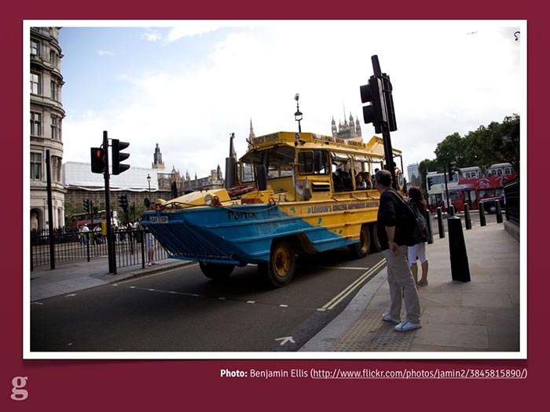The London Duck Tour in action. Source.
It was the London Duck Tour[1], famous for being the city's only "amazing amphibious adventure". You can see it here packed to the gills with tourists checking out the capital.
But the cool thing about the London Duck Tour is that it can go off-road:
It's aquatic! Source.
That's right: if you've ever felt that the dirty, polluted water of the Thames feels too far away, you can take the plunge into the river thanks to the Duck Tour.
This got me thinking a little bit. That vehicle is actually prepared for the future. I don't mean it's got an electric motor or takes hybrid fuel. I mean it's built to handle pretty much anything:
- If Kevin Costner's Waterworld ever becomes real, the London Duck Tour can just carry on as normal, ferrying tourists about to look at the sunken remains of Madam Tussaud's.
- If 28 Days Later comes true, they're still covered: look at the front of that thing. No zombie's getting anywhere near it, leaving them free to look at all the swaying, dishevelled-looking people near Camden Market. Zombies, I mean.
- Finally, if it's still around in 5.4 billion years when the sun expands and destroys all known lifeforms[2], it even has a way of putting out fires which might be blocking people's view of society crumbling into ash.
{kind=link}
This is actually a pretty good metaphor for the web. For years we've been building very strictly-separated experiences, expecting our users to make the correct choice for us.
Even worse, sometimes there's no choice at all: quite a few websites still refuse to acknowledge that there's more than one way to access their content.
I'd like to talk to you today about how the Guardian is trying to build a platform a bit like the London Duck Tours: future-friendly, adaptive to change, and helping users see the best stuff no matter where they are.
Above all though, I want to convince you to make your website future-friendly[3].
I'm going to cover three aspects of our work: why we needed to do it, how we built it, and how we test it.
a) Why was it important for the Guardian to become future-friendly?
The answer is simple: the future is already here and our audience are already demanding it from us.
We're a global media organisation producing 350+ pieces of content per day to millions of users per day. You don't even want to imagine how long the list of devices is in our analytics software (6000+ devices across 300+ browsers in September 2013).
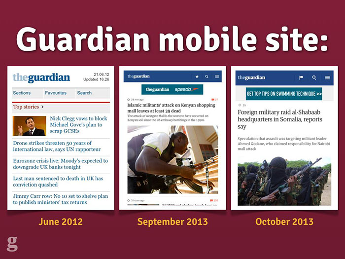Various incarnations of the Guardian's mobile website.
Back in 2012 we were getting bogged down working with third parties on our lowest-common-denominator mobile website. We were working with a desktop website consisting of a hundred templates and over 600 components – on a fortnightly release schedule.
Making a website scalable doesn't just mean coping with huge traffic: it means coping with huge change. Our desktop site wasn't designed for that kind of adaptability, so we needed to throw it out and start again.
We had to build a platform capable of quick change.
How we became future-friendly
Okay: so how did the Guardian go about creating this new platform? What did we have to change?
Well, by definition: everything.
You could spend time trying to figure out everything you currently have on your site and working out what code is worth porting over and keeping, but the time spent doing this just wasn't worth the effort for us. A clean break was actually one of the most valuable aspects of the rebuild: it allowed us to ditch things that weren't working see who complained, rather than argue it out for every widget, button and promo component.
There were four main things we changed which I'd like to go over now and explain how they helped us succeed in planning for the future of the Guardian online.
1. Cutting the mustard.
The first step in rethinking the web for the future is accepting that making things look exactly the same across all browsers is an idea best left to the past.
The multi-device web means that there's no longer such thing as a single-experience website. This means we need a way to differentiate between experiences from a code perspective.
The BBC did some great work on this[4], devising a JavaScript test which would detect support for a number of core browser features and thus determine whether a given browser "cut the mustard" or not. Developer Tom Maslen put it best in a blogpost about their responsive work:
"[cutting the mustard is] an opportunity to wipe the client-side development slate clean."
We were inspired by this at the Guardian and followed a similar path to the BBC in deciding how to put our users into buckets. This is the code we use to decide which experience our users get:
isModernBrowser: (
'querySelector' in document &&
'addEventListener' in window &&
'localStorage' in window
);If a browser has all three of these features, we consider it a "modern" browser and it gets the full-fat JavaScript application. If it doesn't (IE8, Firefox 3.5 and below), the JavaScript is never loaded and the user gets a page which is quick, lightweight and completely usable and accessible. They even get the ads.
Part of the goal here is to avoid punishing your users. We don't bother with jQuery or any other "do everything" library on the new Guardian site: most of the features we want like DOM querying and event binding exist natively now. For some features we use a bunch of microlibraries, but life is made much easier by not having to take broken browsers with us on the journey.
75% of our mobile traffic comes from either the iPhone or high-end Android devices running WebKit & Blink. These devices don't need polyfills: don't send any to them.
Ultimately: don't be afraid to build multiple experiences. Pixel perfection is an anti-pattern: reject it.
2. Integrated workflow.
The second step in making the Guardian future-friendly was an integrated workflow. For us, this meant making UX and Design a part of the development team: not (just) producing "deliverables", but in the trenches with the software team and responding to new developments and tricky design challenges.
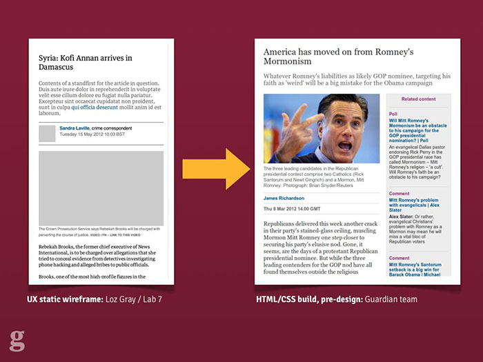Some examples of the Guardian's UX process for the responsive mobile site.
Our process looked a bit like this: our UX Designer produced HTML wireframes illustrating the experience goals of the new site. These were deliberately colour-free and usually image-free too but served to get across the idea to multiple parts of the team without having to be too fleshed-out. We were lucky enough to have a UX specialist with a strong front-end web development background too[5]: this meant his UX mockups were fully responsive. When it came to demoing ideas to stakeholders, it meant that even from the wireframe stage, they were getting the idea that this was a website with more than one visual experience.
From there it was over to our designers to interpret the wireframes and begin marking out the visual language of the Guardian. We chose not to stick with the "classic" Guardian style, which also coincided with the Guardian hiring its first-ever Creative Director for our digital products. The new site therefore got a strong and bold new look which was dramatically different from what came before.
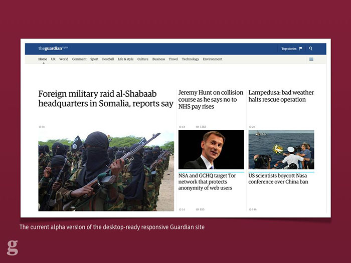An image of the new, experimental desktop design for the responsive site.
After the first few exploratory designs, we began to integrate the design team into the software team so they could see the results of their work and so developers could feed back and ask questions as they worked, not afterwards. We built a live style guide using the repeated components across the site, and agreed on standardised typography classes with shared names between design and development. This kind of approach made refactoring things much easier when designs were updated.
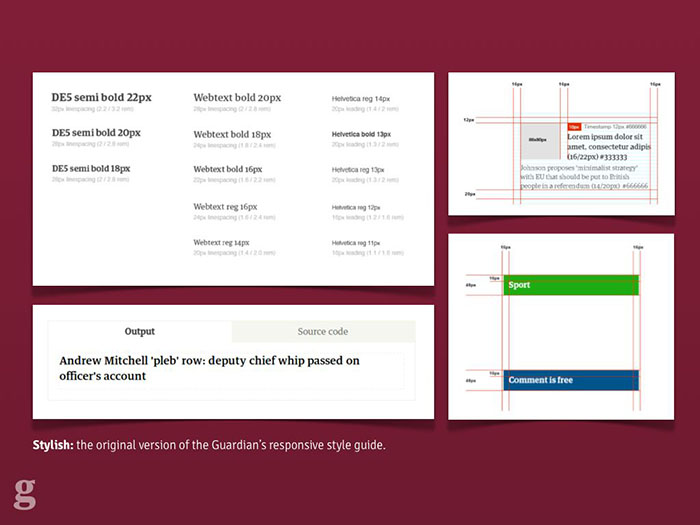The styleguide built inside the responsive app itself, used to share and communicate design ideas.
For years at the Guardian we've worked in cross-functional teams in terms of development: integrated front-end, back-end and QA. With this project though we were able to integrate UX and design into that team and the benefits have been huge. I'd argue that it's impossible to deliver a well-built responsive site without a unified team, even if it involves bringing in agencies or contractors into your office to work.
3. Features over devices.
Too many people mistake responsive design for "building three websites: mobile, tablet and desktop". Here's how they should be thinking about it
"Cutting the mustard" leaves us with two types of browser: "modern" and, er, "ancient". This doesn't mean they're all equal within these buckets, though.
At this point some people start to panic and just design their site around specific device models like the iPhone 4 or the new iPad. Thinking like this doesn't scale and the solution is actually easier: if we use progressive enhancement as our guide, a lot of things come for free.
Progressive enhancement begins around one thing. It's not "make it work in IE6 first", it's not "build it without JavaScript". It's simple: build your website content first.
At the Guardian we looked at each page and worked out what its "core content" was. This wasn't hard: for an article page, the core content was the headline, the main photo and the article body. Everything else was considered non-core and could be dropped if necessary. Once we had this starting point, we could begin writing code.
We now knew that whatever happened, whether the user didn't support JavaScript, CSS, or was accessing the site on a GameBoy Advance, they had to be able to see that core content.
This opened things up: again avoiding the tyranny of "pixel-perfect" design, it was okay to say that users who failed our "modern browser" test wouldn't get our "related content" widget, which loads via AJAX. People who didn't support WOFF or TTF wouldn't get our web fonts.
One common error with building sites for the mobile web is faulty assumptions like this one: device size is equivalent to network speed.
We've all been here: too lazy to grab a laptop or desktop instead. Source.
We know this isn't true: how many of us browse the web on a smartphone while sitting at home connected to wifi? Likewise, who's experienced the pain of connecting their high-end laptop to the extortionate "wifi" you pay for on trains? The size of the screen isn't a reliable indicator of the connection speed.
I'd like to show a quick video I made showing page load experiences for different British news websites: the Guardian, the BBC, the Telegraph and the Daily Mail. I recorded these while simulating an Edge mobile connection – eg. slower than 3G. This might not be a typical user's experience, but for the poor person stuck on a stopped train or in a field in Glastonbury, this may well be their experience of the mobile web. Let's take a look.
Warning: some viewers may find the following clip distressing.
Warning: I make no claims for the scientific accuracy of this test, but it gives an approximate idea of the times involved.
Now, perhaps I should point out that for whatever reason – in 2013 – the Daily Mail doesn't have a mobile website, let alone a responsive one. I assume they want users to download their apps rather than use the mobile web. But if you do try to load their whopping 8mb homepage over Edge, you'll be waiting for...
... 30 minutes. Or at least, that was when I got bored waiting for it to finish and stopped recording.
This means it's our responsibility to not make assumptions: just because someone's loading our desktop website, doesn't mean they're on a super-fast network. We need a way of making decisions based on connection speed.
Luckily for us, there's already a specification for helping figure this out. We use the window.performance object[6] at the Guardian to calculate real timings for the page serve speed, and make decisions about whether to upgrade low-res images or web fonts based on this.
This doesn't work in all browsers yet (notably Safari), but that's fine: only browsers which cut the mustard will get this code. Older browsers will be given the low-resolution experience, or we'll assume they're on a slow connection initially.
Google's touchscreen laptop, the Chromebook Pixel. Source.
Another mistake people make is assuming that a mobile device means a touchscreen. Our image galleries load in keyboard navigation for non-touch devices, and swipe navigation for anything with a touchscreen. We made a mistake here though: we assumed those two features were mutually exclusive. Then Google came along with the Chromebook Pixel and it turns out a device can now have a keyboard and a touchscreen. Good feature detection can mean you're future proof against these sorts of devices.
Some people think that the content itself should differ based on device. While I think this makes sense for certain cases, where you might not want to display a large component by default on a smaller screen, in general I think this is bad content strategy. Here's an example.
A Guardian editor (who will go unnamed) once said something along these lines in a planning meeting for the responsive site:
"If a user is on a mobile device, we should show news about the latest iPhone more prominently"
The reasoning there was that we know the user is on an iPhone, so we infer that they'd be interested to know when a new one is coming out.
This sounds reasonable enough until we stop to think about it a little. If I'm sat at home listening to the Beatles on vinyl, I don't put on my iPod and listen to One Direction when I go outside. Tastes and interests don't magically change when people switch device. If I care about the iPhone, I care about the iPhone. Show me news about it wherever I'm browsing from.
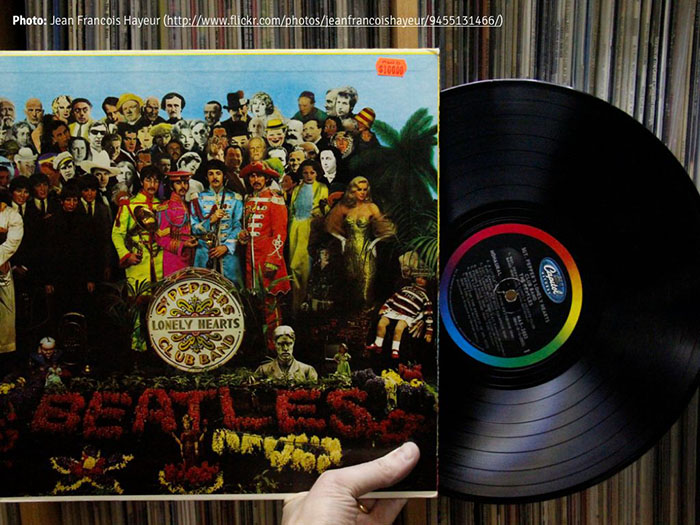Sgt. Peppers is great, so why would I go changing? Source.
Of course tailoring content to users more likely to be interested in it is a really smart thing. The key is to personalise it by interest, not by hardware.
3. Swimlaning.
When I first joined the Guardian, we released an update to "R2" – the monolithic codebase which powered everything from the frontend of the site through the editorial CMS backend – once a fortnight. This was a scary process which involved key team members coming into work early on the morning that we did it in order to "supervise" the release. It meant that we had to take everything down for 15 minutes while the release happened: you can imagine how excited Editorial were when we had to remove their access to the CMS for a quarter of an hour so we could update a line of CSS.
Eventually we hacked on ways to update the code independently of an R2 release cycle, but something was broken and we needed to fix it with the new responsive site. The solution was swimlaning.
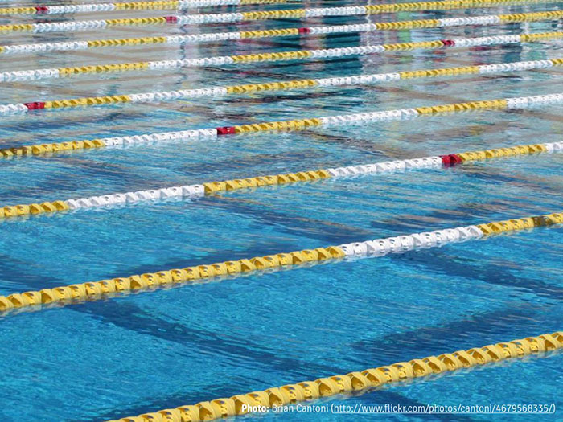A swimlane, yesterday. Source.
Swimlaning basically involves splitting out all of your services so they're independent and unable to conflict with one another. The Guardian desktop site was once brought down by a failure on our commenting platform[7]: the pages would wait for a blocking response from that server. If it slowed down, our content servers slowed down too. Swimlaning removes that problem.
The responsive site has a separate set of Amazon AWS servers for each "application" within it: e.g. the "articles" app, the "gallery" app, the "front pages" app and so on. Each of these can be released independently without touching the others. If one goes down, the others remain unaffected. We can give more heavily-trafficked apps more server resources and balance our spending with Amazon. Best of all, it makes deploying changes absolutely trivial, with a neat command line interface for pushing things out quickly and without fear.
Swimlaning doesn't just relate to architecture: we try to apply it to the code itself, too. Our site loads adverts and promotional items whose content we usually can't control. This means we have to sandbox as much of our code as we can.
A large part of this is following the AMD specification[8] for our JavaScript so it avoids the global namespace and uses pub/sub methods to communicate between modules. This protects us from adverts which might load their own libraries in and overwrite ours. We also try to do this with CSS: we use Sass, following Jonathan Snook's SMACSS framework[9]. Although CSS can't be sandboxed in the same way JavaScript is (until Web Components are done), using less-specific selectors which are carefully namespaced means there's less chance of third party code changing our body text to Comic Sans.
Speaking of advertising: that's one area we're struggling to properly swimlane. Most of the ads load code like this:
document.write('\n');
document.write('\n');
document.write('\n');
document.write('\n');
document.write('\n');
document.write('\n');
document.write('\n');
document.write('<script type="text/javascript">\n');
document.write('//<![CDATA[\n');
document.write('var filePath = "http://imageceu1
.247realmedia.com/RealMedia/ads/Creatives/Guardian/USAY_
Compare_May12_PBR_ROS_Leader/banner468x60.swf/133577
8817";\n');
document.write('var TFSMFlash_PRETAG = "";\n');
document.write('var TFSMFlash_POSTTAG = "";\n');
document.write('var TFSMFlash_VERSION = "9";\n');
document.write('var TFSMFlash_WMODE = "opaque";\n');We've tried dumping this kind of thing inside <iframe>s so they at least don't block rendering for our content, but some ads need to break out and expand and this is tricky to handle from a frame.
The advertising industry hasn't caught up to HTML5 yet, let alone the responsive web. There are some startups doing interesting things around responsive ads but ultimately it's going to need the whole ad industry to jump ship or evolve before they'll succeed. It's a tough challenge.
The other main benefit of swimlaning is that it means there's no such thing as "big bang" releases. These are the worst thing for products: there's the expectation and "reveal" moment which inevitably results in surprise and shock from people who haven't seen it before. Our release process means we were able to publicly share what we were doing almost as soon as we had something that worked. By working in the open like this it removes the fear of the "big reveal" moment and means we got feedback about things that weren't working much earlier in the process. All of our code is public on GitHub for the same reasons.[10]
The upshot of working like this is that on launch day, we knew exactly what was going to happen – there were no nasty surprises as we'd already been running beta users through the stack for months and had been deploying to dozens of times a day. We knew it could take the load and we knew a decent chunk of the audience had already seen the new site and given feedback so it wouldn't be a shock. The confidence this gave the team has been hugely beneficial.
c) Testing for future-friendly status
The short answer is: accept that it's almost impossible to test things across all devices, browsers and contexts. Once you get over that, you're halfway there.
For us, we only had a single dedicated QA tester on the project, which might sound hugely minimal. This meant that our automated tests had to be pretty bulletproof to avoid dragging out releases with a full suite of human-powered regression testing.
We also knew from our analytics which devices were most popular among users – 50% alone were using iPhones. This made it easier to prioritise the devices we tested with. We have a cupboard full of various phones, tablets and laptops which we test on, and we also use some cloud-based tools to simulate rendering on other browsers and contexts. We relied on RUM – Real User Monitoring – to tell us the rest.
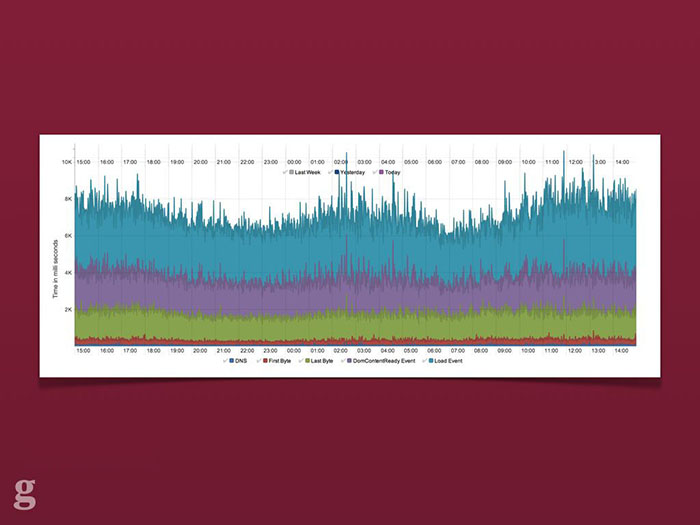A screengrab from Ophan, the Guardian's internal analytics tool. It shows various page rendering metrics over a 24 hour period for the responsive Guardian site.
This involved setting up dashboards which logged all sorts of client information: time to first byte, JavaScript error count, page rendering time and so on. We look for spikes in these graphs – sent from real users – after a release. If something abnormal appears we can look into it and quickly push out a release. We learned that being able to quickly and simply diagnose a fix is more efficient and speeds development than trying to anticipate everything that might possibly go wrong in advance.[11]
As an aside: the more we make use of progressive enhancement, the less likely it is that we'll be woken up at 3am with a critical bug. Even if our JavaScript fails or our commenting server falls down, readers will still be able to read the news.
Conclusion
So, to conclude. What I want is for you to reconsider your current web offering. You might have already "gone responsive", but is this enough? Responsive design is just one aspect of being future-friendly. Are you ready for what happens when "responsive" itself becomes outdated and in need of replacing?
The benefits to the Guardian of rebuilding our web platform to be "next generation" are clear:
- Our core content is optimised to be always-available, very quickly, to any class of device and browsing context
- Our infrastructure means we can release things quickly and trivially without downtime or rollbacks
- We don't spend half our lives testing everything because our monitoring and progressive enhancement give us confidence
- When the next big thing rolls around, we can quickly update the relevant parts of the application without having to commit to a full-scale rebuild (like we've had to do now!)
At the start of this talk I mentioned the London Duck Tour and how it's a great metaphor for a future-friendly web. What I didn't show you (because it happened a week before this conference) was that recently, a Duck Tour boat accidentally set on fire during a tour and tourists were forced to abandon ship in the Thames right next to the Houses of Parliament.[12]
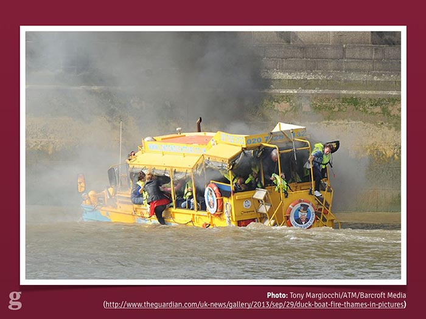The London Duck Tour, sadly on fire. Nobody was harmed, luckily. Source.
When I first heard this news I was mildly devastated that my intro analogy was going to become a laughing stock. The Duck Tour hadn't been able to adapt for the future where it caught fire and sank.
The more I thought about it, though, the more it made sense. Responsive Design came along a couple of years ago to wake us up to the fact that screen size and device form factor were important and we couldn't keep building experiences separately. Here we are in 2013, though, and the landscape is even more complex and divided. Responsive, as a vehicle for bringing us to this point, has been incredible: it's changed how we work and how we build things. But it's only a part of the journey.
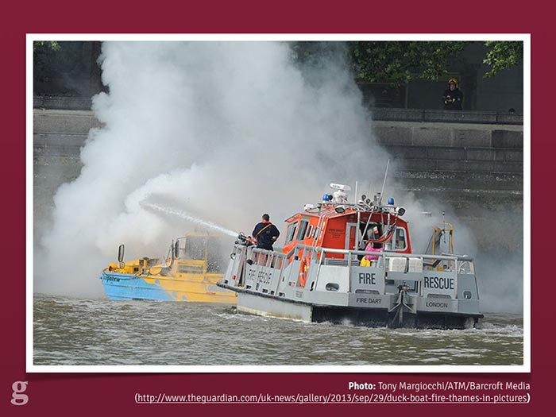The fire gets put out as tourists are whisked to safety. Source.
Building things for the web means we shouldn't be bound to one "holy grail" technique or tool. Most of us have been doing this for long enough to see the cool new flavour of the month become old and unfit for purpose: look at jQuery, for example. Once it was an integral part of any website, no matter how trivial. These days, though, more and more larger sites are realising they can do without it. And that's fine. That's what the jQuery authors want: to get to a web where the browser APIs are standardised and equal, to reach a point where we don't need to polyfill broken browsers.
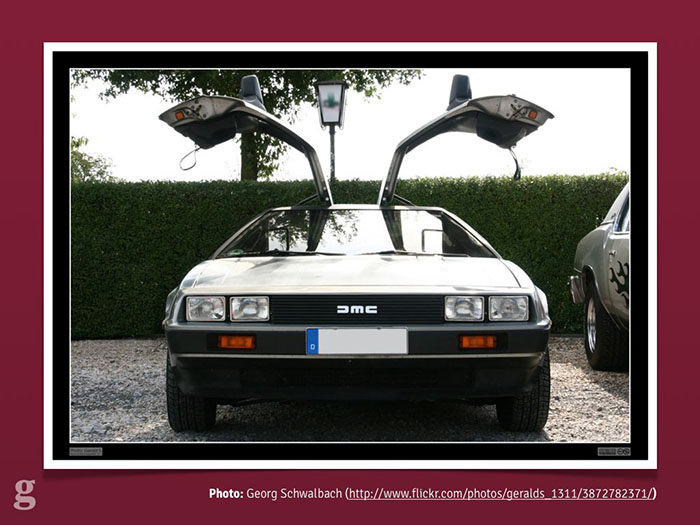Roads? Where we're going, we won't need roads. Source.
If I say "responsive design is dead", it's because the ideas Ethan came up with in 2010[13] have been so widely recognised as smart and crucial and it's been so widely adopted that it's done its job: it's moved the web forward where we're all thinking about multi-device experiences. It's our job now to keep moving with that wave; stay on top of it and not let our guard down again like the poor chaps from the Duck Tour. We need to be ready for anything and build for a web platform which constantly evolves and transforms. Being future-friendly won't get us all of the way there, but it means that when the unexpected becomes the norm, it's not going to take us by surprise.
Thank you very much for listening.
— Matt Andrews
mattandrews.info • @mattpointblank
Notes & references
- London Duck Tour, famous for being the capital's only amazing amphibious adventure.
- The Earth's Red Giant stage, the point at which the Sun expands and to 2730 times its current luminosity and ends most life on our planet. Fun.
- The Future-Friendly Project, a collective aiming to promote building the web of the future.
- BBC's Responsive News blog featuring dozens of useful posts about their work.
- Loz Gray: Lab 7 UX Consultancy, the UX designer/developer who produced the Guardian's responsive wireframes
- Navigation Timing API, useful for getting information about the loading and performance of a website.
- How a Javascript upgrade brought down our commenting platform, on the Guardian Developer Blog.
- AMD JavaScript – a good introduction by expert Addy Osmani
- Jonathan Snook's SMACSS for CSS, helping keep CSS scalable and modular.
- The Guardian's Frontend repo: all open-source. Send us a pull request!
- Real-time QA: staying confident with code, by Andy Hume on the the Guardian Developer Blog.
- Duck boat tours suspended after fire on Thames, on the Guardian.
- Ethan Marcotte: Responsive Web Design, the article that started it all.